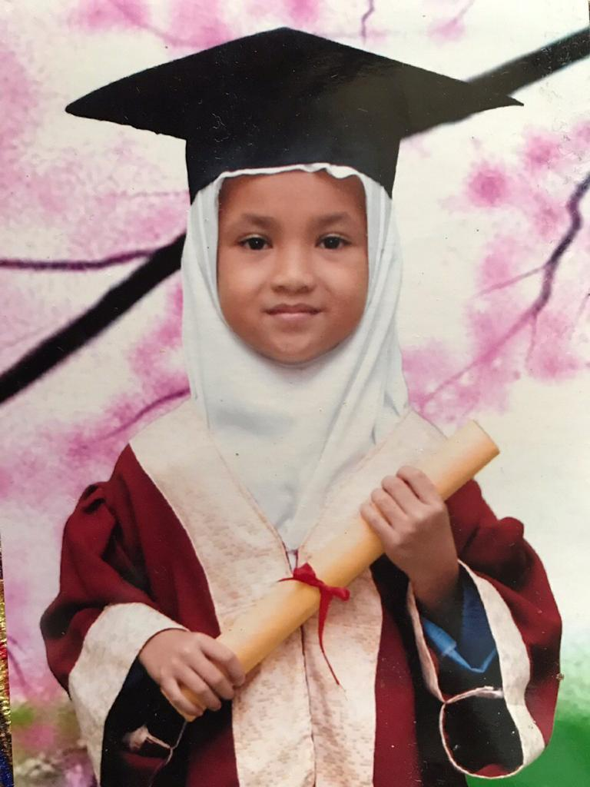
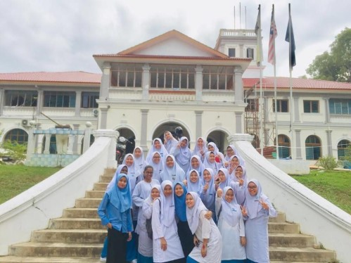
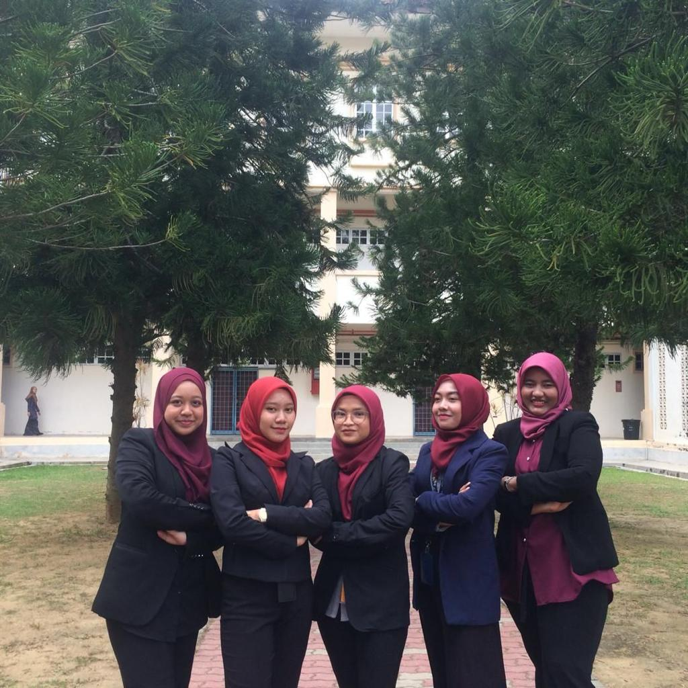

Home Page
Biodata
Experience
Education
Family
Gallery
My Cats
MY EDUCATION
When I was six years old, I began my schooling at SK Datin Khadijah kindergarten. And when I was seven years old, I began primary school at SK Datin Khadijah, where I stayed until I completed my UPSR. For my UPSR, I received a 5A, which I am happy for. SMK Raja Perempuan Kelsom is the name of my high school. I went there to study until I finished my SPM. For my PT3, I received a 7A, and for my SPM, I received a 6A. I decided to continue my education at UiTM Kedah in the Information Management degree after receiving my SPM results, and I am presently in semester 5. I am hoping to complete this semester strong and earn a decent CGPA. Here are some of my memories during school and university!


